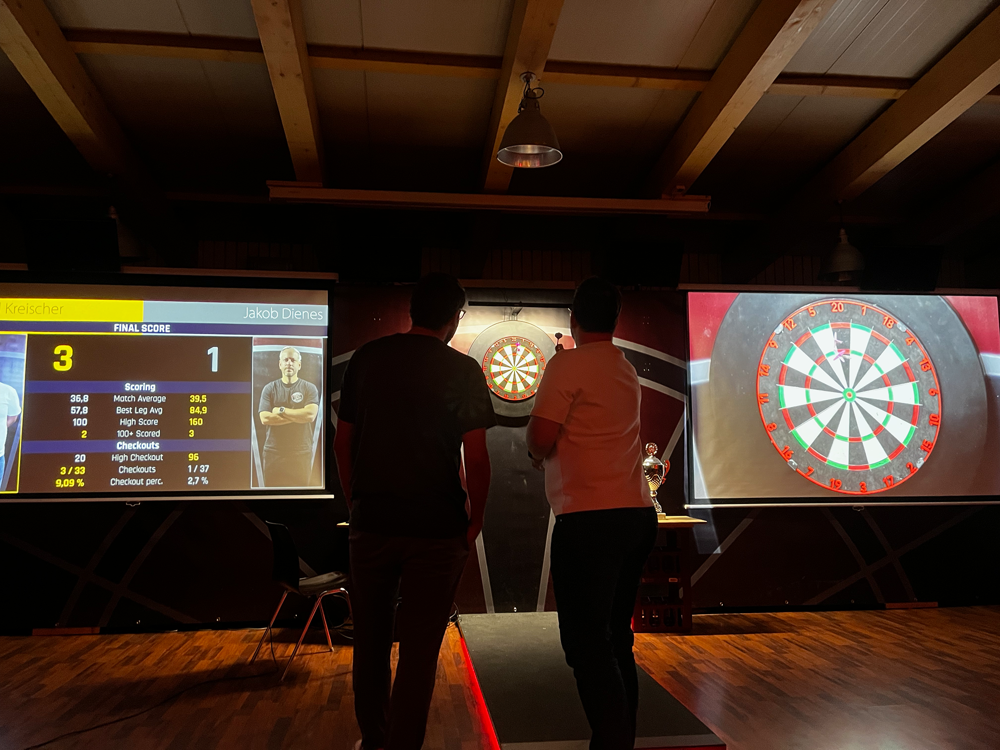
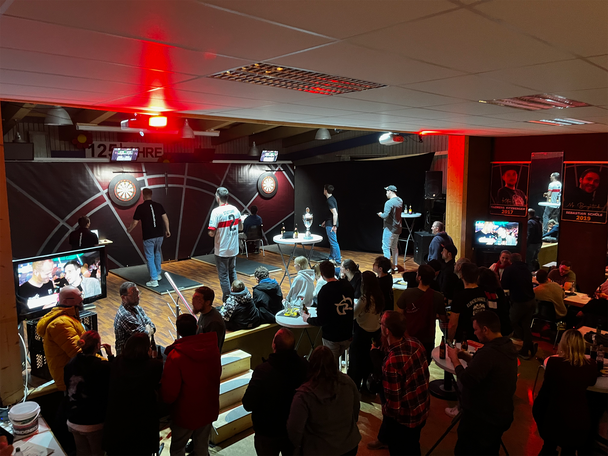
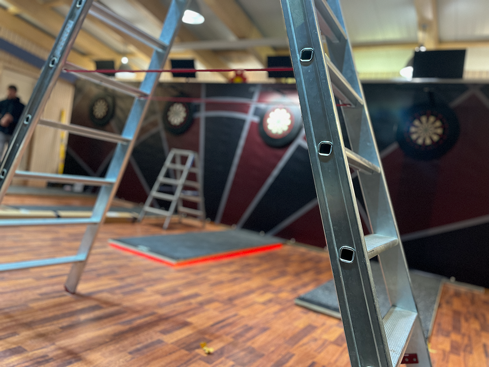
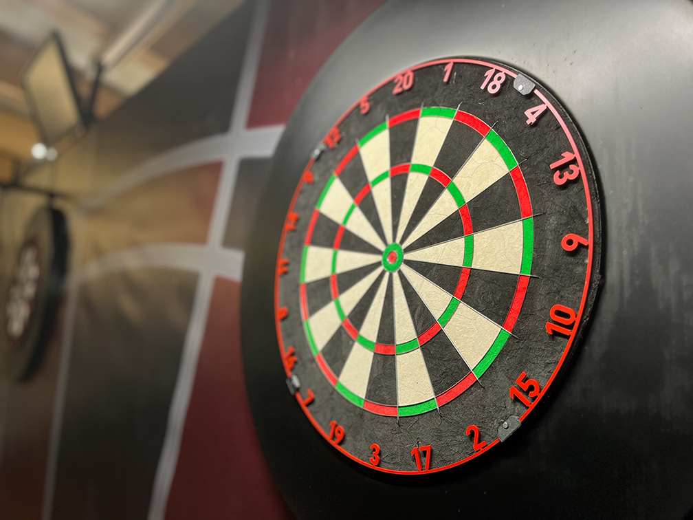

Wir sind
DC ILLINGER
IGEL 26
Ein Steeldartsverein aus Illingen mit Leidenschaft für sportlichen Wettbewerb, gemeinsame Dartabende und ein aktives Vereinsleben.

DC ILLINGER IGEL 26 E.V.
Dart. Gemeinschaft. Leidenschaft.
Wir sind
Ein Steeldartsverein aus Illingen mit Leidenschaft für sportlichen Wettbewerb, gemeinsame Dartabende und ein aktives Vereinsleben.
Darts in Illingen
Was mit gemeinsamen Dartabenden und einem eigenen Turnier begann, ist über die Jahre zu einer festen Gemeinschaft rund um den Steeldartsport in Illingen gewachsen.
Mehr zu unseren Turnieren
Über uns
Der DC Illinger Igel 26 e.V. ist ein Steeldartsverein aus Illingen. Unser Ziel ist es, den Steeldartsport vor Ort zu fördern und Menschen mit Begeisterung für Darts zusammenzubringen.
Wir organisieren regelmäßige Spiel- und Trainingsabende, nehmen an Wettbewerben teil und veranstalten eigene Dartturniere. Dabei stehen für uns Sport, Gemeinschaft und ein faires Miteinander im Mittelpunkt.



Unsere Mission
Wir möchten Steeldarts in Illingen dauerhaft etablieren, sportliche Entwicklung ermöglichen und einen Ort schaffen, an dem gemeinsamer Sport und Vereinsleben zusammengehören.
Zum SpielbetriebVerein & Kontakt
DC Illinger Igel 26 e.V.
Sieglestraße 10
75428 Illingen
Amtsgericht Mannheim
VR 704814
illinger-igel.de ist die offizielle Internetpräsenz des DC Illinger Igel 26 e.V.
Kontakt aufnehmen